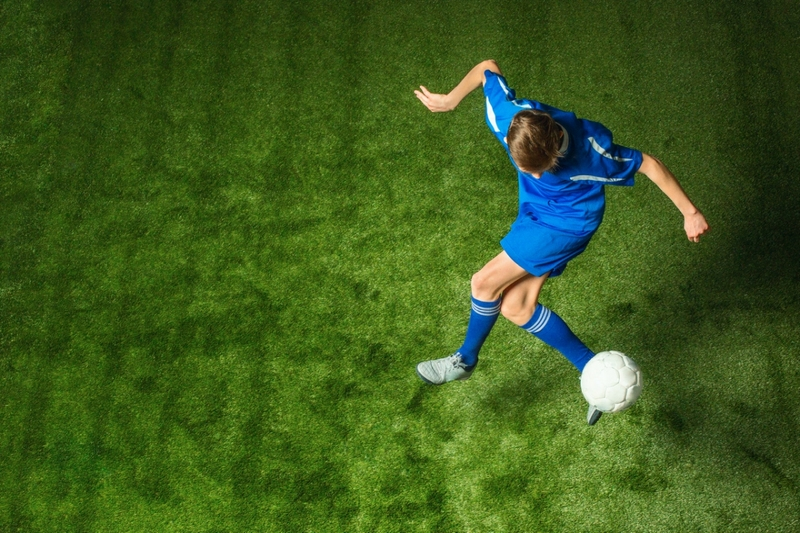
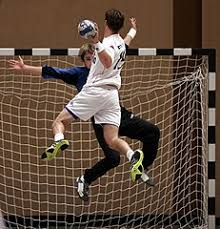
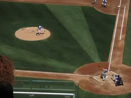

Piłka nożna
Piłka nożna to drużynowa gra na trawie, w której zawodnicy strzelają gole do bramki przeciwnika. Wymaga współpracy i precyzji.
Piłka ręczna
Piłka ręczna to szybka gra zespołowa, w której zawodnicy rzucają piłkę do bramki. Wymaga siły i zwinności.
Baseball
Baseball to drużynowy sport z odbijaniem piłki kijem i zdobywaniem baz. Wymaga strategii i precyzji.